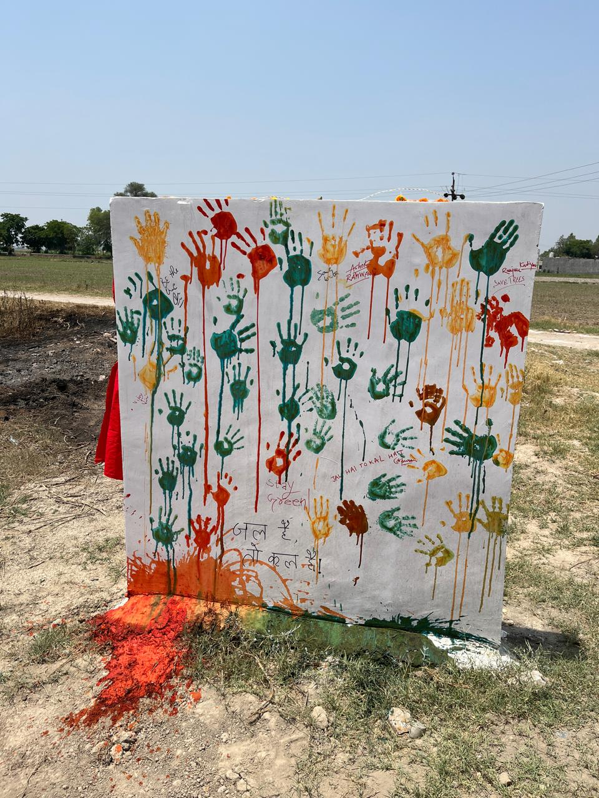

Empowering communities through equity, education, sustainability, and innovative partnerships
Established on January 30, 2025, RAHI Foundation is a non-profit organization dedicated to addressing the critical social challenges faced by marginalized communities, including women, children, farmers, and underprivileged groups.
To create a just and equitable society by empowering vulnerable communities, particularly women, farmers, and children, through innovative and sustainable development programs in education, livelihoods, gender equality, and resource management.
A world where every individual has access to basic rights, sustainable opportunities, and a dignified life, free from discrimination, inequality, and economic hardships.
RAHI Foundation follows a community-driven, participatory approach to ensure the long-term sustainability of its programs:
Involving local stakeholders in decision-making to create impactful and sustainable solutions.
Working with governments, NGOs, corporate CSR programs, and multilateral agencies to amplify impact.
Leveraging digital tools, renewable energy, and modern agricultural practices for holistic development.
Ensuring that programs are self-sustaining and adaptable to diverse geographies.
RAHI Foundation’s work is centered around four key thematic areas, designed to uplift and empower communities:
Enhancing access to quality education, digital literacy, and skill development.
Creating sustainable income opportunities through skill-building and entrepreneurship programs.
Promoting sustainable agricultural practices, afforestation, and conservation efforts to safeguard the environment.
Empowering women through economic independence, leadership training, legal aid, and gender sensitization programs.